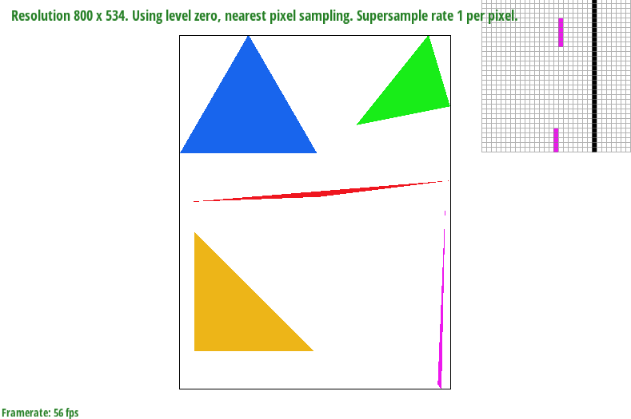
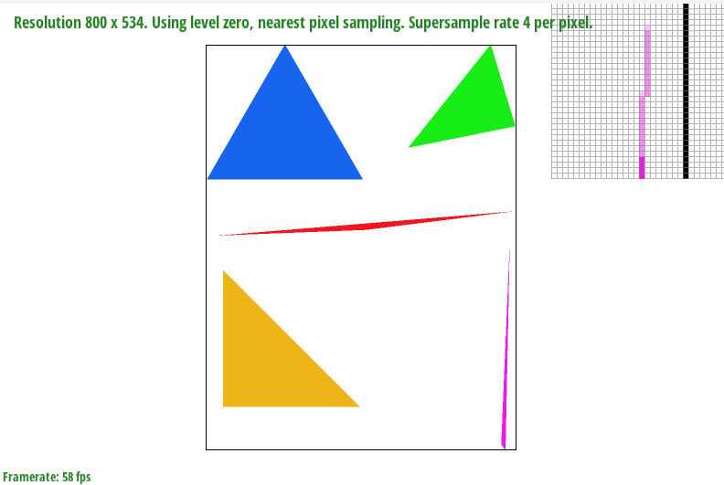
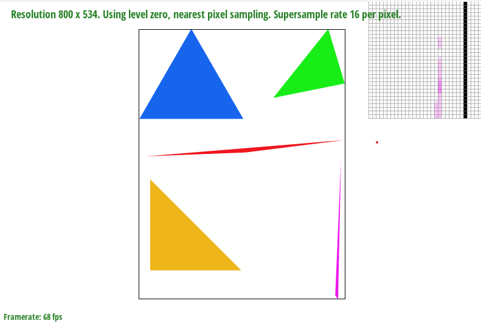
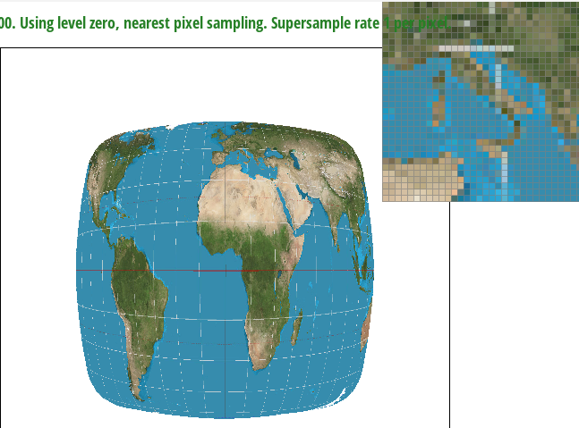
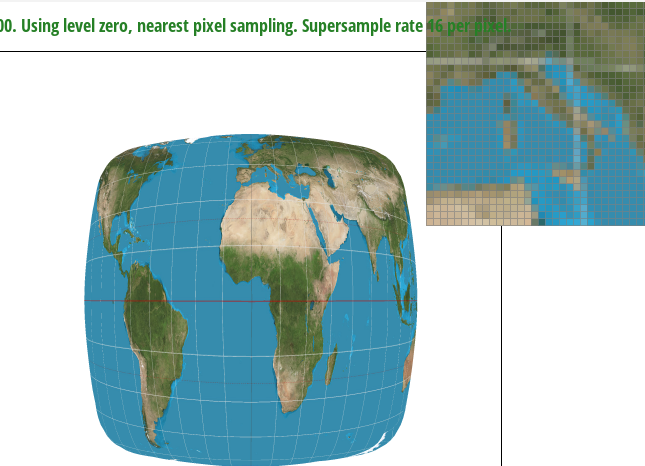
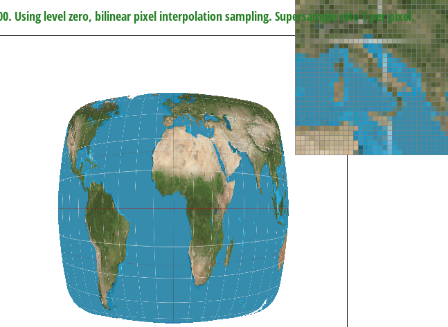
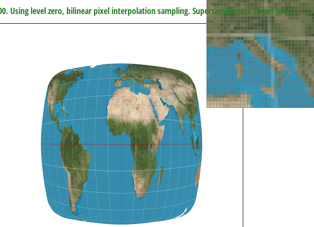

Task 1
In my own words, rasterizing triangles is the process of converting from an .svg file to a pixel representation of a triangle.
To rasterize triangles, we implemented the rasterize_triangle function. Inside this function, we first calculated the bounding box of the triangle given the coordinates.
This was done by calculating the minimum (x,y) value and the maximum (x,y) values. This reduces the amount of points we need to verify. From there, I looped through
every pixel within the rectangle bounds and called a helper function, inside_triangle().
Our helper function inside_triangle() takes in three points (the points of the triangle as defined) and also another point that we want to test
whether it is inside the triangle or not. Within the body of the triangle, we calculate l0, l1, and l2 by first finding dx and dy between each pairing of x and y.
Then we plugin the x and y we want to test for into the line equation. For example, to test whether (x,y) is either inside or outside line defined from point0 to point1,
we set l0 to -(x - x0) * dy0 + (y - y0) * dx0. Then, once getting l0, l1, and l2, we test whether either all of them are greater or equal to 0, or whether all of them are less than
or equal to 0. Therefore, to do this I looped through every x and y pairing inside the bounding box (+.5 for each integer coordinate to test centers) and called inside triangle.
If it was inside the triangle, I called fill_pixel() helper function to fill in the triangle. Because we only check the bounding box defined by max x, max y and min x, min y of the points of the triangle, it can be no worse than one that checks each sample within the bounding box of the triangle.

Please see above for our completed Task 1 Image.
Task 2
For supersampling, we mostly kept the bounding box logic from Task 1, except I changed two things.
1. Instead of simply calling fill_pixel, we use the sample buffer to keep track of the color of each sample for each bounding box point.
If any sample was inside the triangle it was given the appropriate color inside the appropriate index in the sample buffer.
2. Once within the bounding box, I created an extra double for loop. Within these for loops, I looped through all the coordinates of the samples for each integer coordinate in the bounding box.
If the sample was inside, we set the sample_buffer index to the color given as mentioned above. Then, when converting the sample buffer to frame buffer, we would find the average value of all samples for any point
and set the appropriate framebuffer index to that color. Through supersampling, the color at each point isn't determined only by a single sample location as above but instead as the average of multiple
nearby samples.


 Above are comparisons of sample rates 1, 4, and 16 for basic/test4.svg
Above are comparisons of sample rates 1, 4, and 16 for basic/test4.svg
When zoomed in, you can clearly see the affect of supersampling

The reason why tehse results are observed, when comparaing rate 1 (far left) and rate 16 (far right) is because with supersampling, we have the ability to represent a pixel as 'half' colored, even
if the original reference point doesn't lie within the triangle. Especially at corners, where only a small bit of a pixel lies within a triangle, supersampling gives us an opportunity to incorporate the contribution
of the part which lays inside the triangle into the color for that pixel.
Task 3

Here, I am attempting to make the robot act scared. However, he recently dislocated his shoulder so his right arm doesn't go as far up as his left arm!
Task 4
Barycentric coordinates give us the relative positioning from three verticies of a triangle. When we have the Barycentric coordinates, then we can assign a proportion to include for each color corresponding to each vertex on the triangle.
Doing this allows us to create a gradient, as demonstrated by the image below.

Here, in a 200x200 window, (0,0) represents red, (200, 0) represents green, and (100, 200) represents blue. Thus, each pixel on the triangle reprsents the proportion of red, green, and blue that that coordinate should have according to the barycentric coordinates, of which we then multiply the respective
alpha beta gamma by the red green and blue values.
Please see below for basic/test7.svg

Task 5
Pixel sampling is the translation from screen space coordinate x,y to texture space coordinate u,v. Since we can only sample u,v at integers, we convert x,y to barycentric coordinates.
From the barycentric coordinates we can then calculate the u, v coordinates of the texture space. The reason we can't directly go from x,y to texture space coordinate is since each part of a triangle should
map to a relative part of the texture map. In addition, x,y is a contiuous, and u, v is discrete, and we cannot directly use a discrete function to define a continous function, instead we have to map or sample it. Since texture maps be sampled at integer coordinates, nearest-pixel sampling method gives us the closest u,v coordinate while bilinear pixel sampling takes the four closest
u-v points and uses interpolation to identify a weighted average of how close they are to the true u-v coordinate.

See above for Nearest & 1 Sample Per Pixel and Nearest & 16 Sample Per Pixel, respectively.

See above for Bilinear & 1 Sample Per Pixel and Bilinear & 16 Sample Per Pixel respectively.
Between the two supersampling rates, the higher supersampling rates provides more accurate shapes, while between the two types of pixel sampling, billinear provides a smoother texture vesus nearest. This is because billinear incorporates multiple points into a weighted average.
Nearest sampling preserves edges better than Bilinear sampling, so the difference between the two is minimized when textures have distinct color transitions.
Task 6
Level Sampling is the process of downsampling a texture. For example, when we have a photo with very intricate details, but when displayed at a small resolution or at a distance, these details become less noticeable. So here we utilizing level sampling because instead of
rendering the full resolution of the texture at all times, we can create multiple versions of the texture at different resolutions, or levels of details. Then, depedning on distance from viewer or size of screen, we can change our optimal level of detail.
There are different tradeoffs between pixel sampling, level sampling, and number of samples per pixel.
For pixel sampling, we sample each pixel individually, which is computationally intensive. This means we also have to use more memory to store a large amount of raw pixel data. However, pixel sampling improves antialiasing quality, but the improvement in quality diminishes with each additional sample.
For level sampling, we can improve speed by precomputing multiple levels of detail. However, this may take some overhead time, which impacts rendering speed.
For memory, we have to store the additionally precomputed mipmaps, which will require additioanl memory.
For Number of samples per pixel, this affects rendering speed because increasing number of samples per pixel increases quality but takes more computation to render. For memory, increasing number of samples per pixel for things like antialiasing requires storing additional data for each sample, which increases memory usage.
For antialiasing power, increasing the samples is correlated with improving antialiasing quality. However, improvement in quality diminishes with each additional sample.